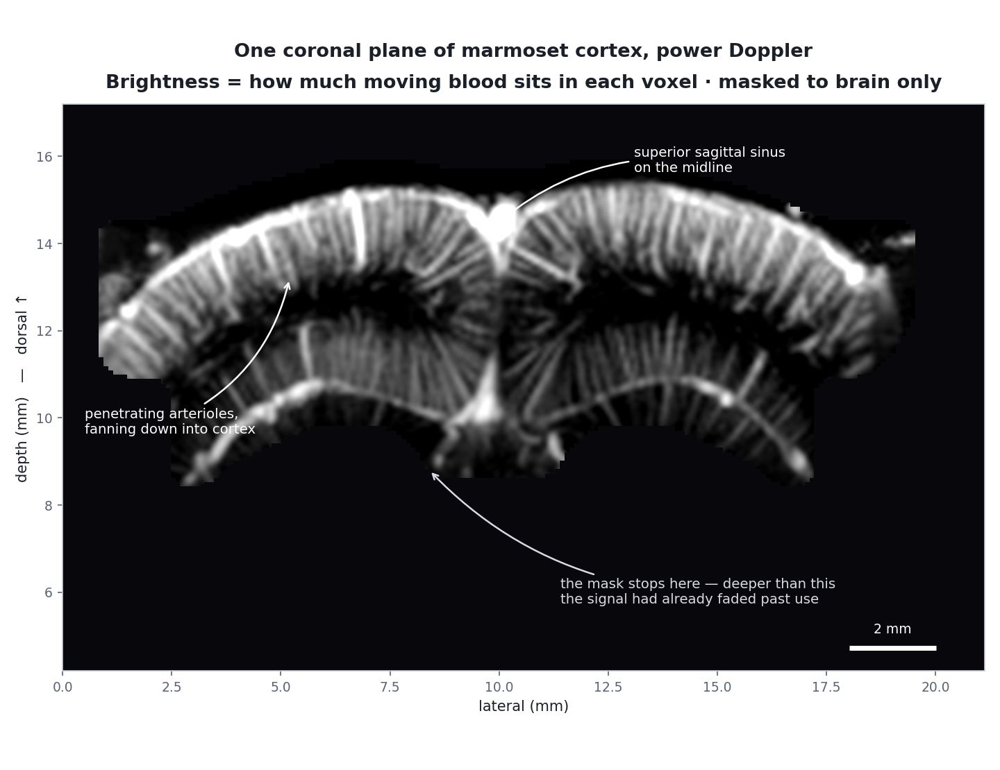
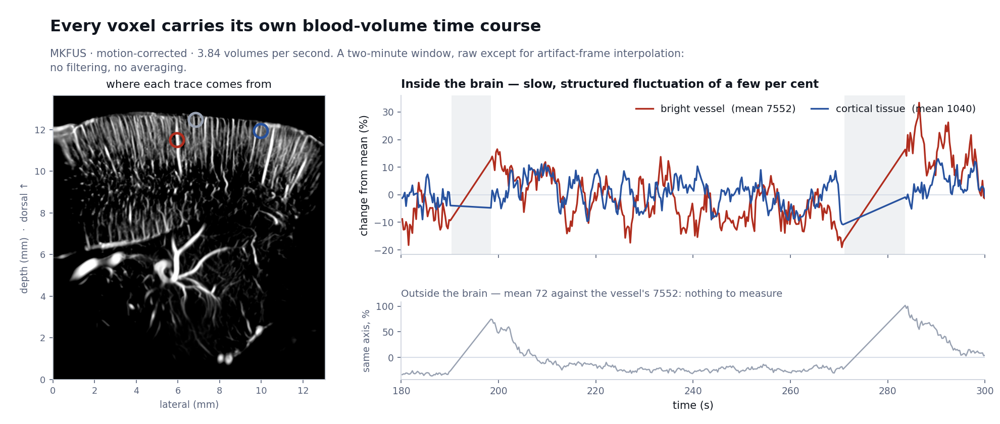
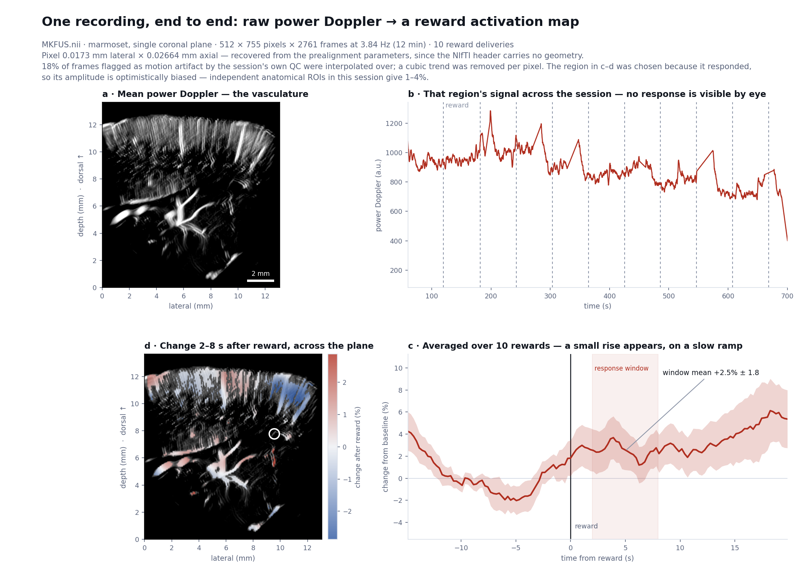
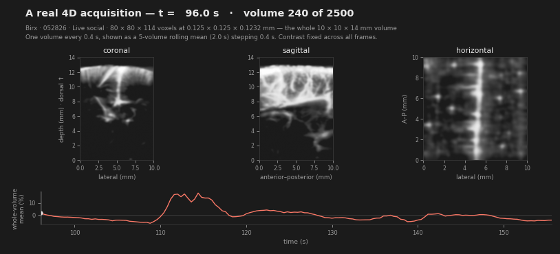
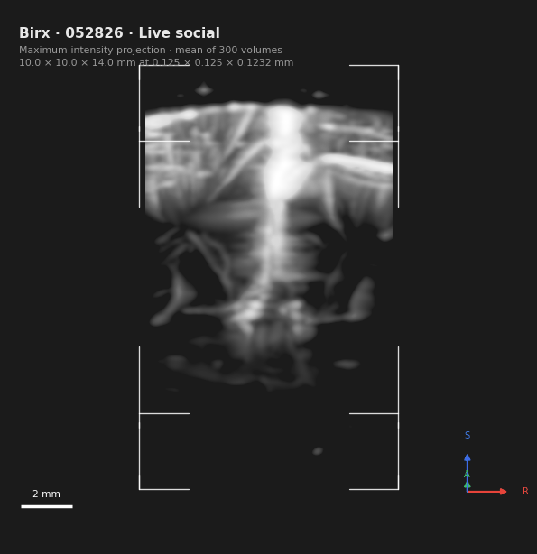

It doesn't image neurons. It images blood — fast enough, and sensitively enough, that the blood tells you where the neurons just fired. Here is the whole chain, from a sound pulse to a brain map, using real data from the volumetric fUS platform I'm building for behaving marmosets at MIT.

When a patch of brain becomes more active, it needs more oxygen and glucose, and within a second or two the local vasculature dilates and delivers more blood to that patch. This is neurovascular coupling, and it is the same phenomenon fMRI relies on. Measure local blood volume over time and you have an indirect but reliable readout of where and when the brain is working.
Ultrasound is a good way to measure it. Sound passes through soft tissue, reflects off everything it meets, and — crucially — the echoes from moving red blood cells differ from frame to frame in a way that static tissue's echoes do not. The entire technique is built on separating those two things.
The probe emits a very short burst of sound and then listens. Sound travels through tissue at about 1540 m/s, so an echo arriving later came from deeper down — 13 microseconds of round trip per centimetre of depth. One transmit gives you one line of brightness-versus-depth; an array of elements gives you a whole image plane.
That is all an ultrasound image fundamentally is: a map of how strongly each point in tissue reflected sound back at you.
Conventional ultrasound builds an image line by line: focus the beam on one line, listen, move to the next, repeat ~128 times. That costs 128 transmits per frame and caps you around 50 frames per second — far too slow to catch the subtle, fast fluctuations that blood flow produces.
Ultrafast imaging throws away the transmit focus. Fire a flat wavefront that floods the entire field at once, and a single transmit gives you a whole image — thousands of frames per second. The catch is that an unfocused transmit produces a poor image. The fix is coherent compounding: fire several tilted plane waves in quick succession and sum the reconstructed images, which synthesises a focus everywhere at once.
In the marmoset scans used here, that means 11 tilted plane waves spanning ±10°, summed into one frame, repeated 500 times a second.
This is the distinction people most often get muddled, and it is simpler than it sounds.
B-mode — "brightness mode" — is the grey anatomical image everyone recognises from a clinical scan. Take the echo magnitude at every point in a single frame and display it. It shows structure: boundaries, membranes, tissue interfaces. What it does not show well is blood, because red blood cells are far weaker reflectors than tissue — roughly a thousand times weaker in returned power. In a B-mode image a blood vessel is typically a dark hole.
Doppler ignores any single frame and asks a different question: at this point in space, how did the echo change across a few hundred frames? Tissue sits still, so its echo repeats almost identically frame after frame. Blood moves, so its echo decorrelates rapidly. Collect 200 frames over 0.4 seconds and the two become separable — not by their strength, but by their behaviour over time.
| B-mode | Doppler / fUS | |
|---|---|---|
| Input | One frame | A few hundred frames in a row |
| Measures | Echo strength at each point | How fast the echo changes at each point |
| Shows | Tissue structure, boundaries, the skull | Moving blood, and nothing else |
| Blood appears as | A dark hole — red cells barely reflect | The entire signal |
| Time to form | Microseconds | 0.4 s in these scans, set by the ensemble |
| Used here for | Placing the probe, checking coupling | Every measurement in the study |
One real-world wrinkle worth knowing: the two modes need not even use the same transmit frequency. In one of the marmoset scans here, Doppler transmits at 12.5 MHz while B-mode transmits at 15.625 MHz — so quoting a single "probe frequency" for that scan would be wrong.
"Doppler" covers two different outputs, and fUS almost always means the first:
Power Doppler takes the energy remaining after clutter filtering. It is proportional to how much moving blood sits in the voxel — roughly, blood volume. It carries no direction and no speed, it is relatively insensitive to the angle between the beam and the vessel, and it is what every image on this page shows.
Colour or velocity Doppler takes the mean frequency shift instead, giving speed and direction — flow towards or away from the probe. It is what clinical scanners overlay in red and blue. It is more angle-dependent and noisier, and in this project it appears only in a few dedicated velocity maps.
One power-Doppler image is an angiogram: a picture of the vasculature. Make one every few hundred milliseconds for minutes on end and each voxel acquires a time course — a running measure of how much blood is in that piece of brain, second by second. When the animal sees, hears or does something, the voxels serving the responsible region rise by a few percent within a second or two.
That is the functional measurement. It is the same logical step fMRI takes, with a different contrast mechanism: fUS measures blood volume directly rather than blood oxygenation, at finer spatial scale and with a faster response.

Everything above, applied end to end to a single session: one coronal plane of a marmoset receiving ten rewards over twelve minutes, sampled at 3.84 volumes per second. The file is 4.3 GB of power-Doppler frames. Every frame has been motion-corrected first, shifting it back into register — the animal moved by up to 23 pixels during the session, about 0.4 mm, which is the same order as the resolution itself.

Three things went wrong on the way to that figure, and all three are standard traps worth knowing before you trust anyone's activation map — including your own.
| The trap | What it produced here | The fix |
|---|---|---|
| Motion left uncorrected | The animal shifted by up to 23 pixels across the session. Separately, 18% of frames were flagged bad by the session's own quality control — and every one of the brightest frames was among them. Left in, they swamped the real signal entirely. | Shift each frame back into register, then interpolate across the frames that are beyond saving — both before anything else. |
| Dividing by a near-zero baseline | A percent change needs a denominator. Computed on dim pixels, the first pass reported a 987% "response" — arithmetic, not physiology. | Require a real baseline signal, and normalise against a stable mean rather than a per-trial one. |
| Choosing the region by its own response | Take the maximum over thousands of noisy pixels and you have selected noise. Even after cleaning, the hand-picked spot reads higher than it should. | Define regions anatomically, independent of the data. Doing so in this session gives 1–4% — the honest number. |
None of this is unique to ultrasound — it is the same circularity that fMRI spent years learning to control for. What is specific to fUS is how strong the artifacts are: the probe sits on a moving animal, and a brief movement can change the returned power by more than any brain response ever will.
A linear array images one plane. There are two ways to reach a volume, and this project has data from both.
The older approach translates the probe on a motor, imaging one plane at each stop. It gives excellent in-plane images over a wide field, but the planes are acquired at different times, so a "volume" is a mosaic rather than a snapshot — fine for anatomy, awkward for fast functional events.
The newer approach uses a matrix array that steers electronically in both lateral directions, capturing a genuine volume every fraction of a second. The trade is field of view: the volumetric probe here covers 10 × 10 mm against the linear probe's 21 mm width.


One caution for anyone about to write these down: voxel size is not resolution. The voxel is how finely the image is sampled, a choice made in reconstruction. Resolution is how close two vessels can be while remaining distinguishable, and it is set by wavelength, aperture and the compounding angles. They differ by several-fold, and the out-of-plane axis is always the worst of the three.
Higher frequency buys resolution and costs depth. Attenuation rises with frequency, so a 15 MHz probe resolves finer detail than a 12 MHz one but gives up penetration. In the images above, the signal fading below roughly 7 mm is attenuation — the anatomy is still there, the sound simply is not.
Bone is nearly opaque to ultrasound. This is the central practical constraint: fUS generally needs a thinned skull, a cranial window, or a species and age where the skull is thin enough to shoot through. It is why the technique took hold in rodents, neonates and intraoperative human work before adult non-human primates.
In exchange, you get something no other functional modality offers together: roughly 100 micrometre spatial scale, sub-second temporal resolution, direct blood-volume contrast, portable hardware, and compatibility with an awake, behaving animal.